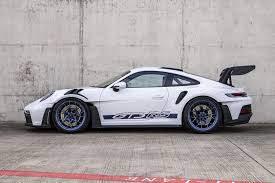
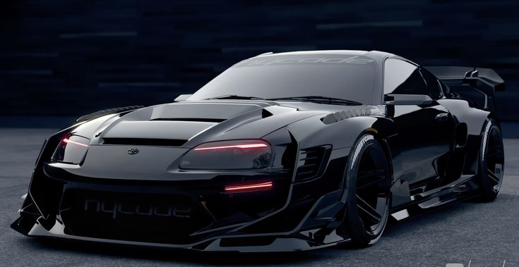

Autos Deportivos 
Autos Deportivos
| Nissan GTR R34 | Nissan GTR R35 | Porsche GT3 RS | Toyota Supra MK4 |
Cuando se trata de autos veloses deportivos no hay mejor opcion que cualquiera de estos 4 autos por su buen desempeño en las pistas son perfectos para los amantes de la velosidad
| Nissan GTR R34 | Nissan GTR R35 | Porsche GT3 RS | Toyota Supra MK4 |
|
 |
 |  |
| El Nissan Skyline GT-R R34 es un coche deportivo japonés icónico, conocido por su motor biturbo RB26DETT y su tracción a las cuatro ruedas. Se produjo en 1998 y es uno de los modelos más populares de la serie Skyline GT-R. Es famoso por su participación en películas como "Fast & Furious" y por sus impresionantes prestaciones. | El Nissan GT-R R35, también conocido como "Godzilla", es un superdeportivo icónico de Nissan que fue producido desde 2007 hasta 2025. Se caracteriza por su motor V6 biturbo de 3.8 litros, su tracción total y su alto rendimiento, tanto en carretera como en pista. | El Porsche 911 GT3 RS es un modelo de alto rendimiento de la familia 911, diseñado para la conducción en pista y para pilotos privados. Es una versión más enfocada al circuito que el GT3 estándar, con mejoras en aerodinámica, refrigeración y características únicas para optimizar su desempeño. | El Toyota Supra MK4 es un coche deportivo de gran rendimiento, reconocido por su motor 2JZ-GTE de 3.0 litros, biturbo, que entrega 280 caballos de fuerza. Es una opción popular entre los entusiastas de la automoción y los preparadores. |